# PRE-SETS ----
rm(list=ls()) # limpa o ambiente de trabalho
# PACOTES
if (!require("pacman")) install.packages("pacman")
pacman::p_load(tidyverse, # pacote para manipulação de dados
rio, # pacote para importar e exportar dados
utils, # pacote base
downloader, # pacote para download de arquivos
sf, #pacote para manipulação de dados espaciais
geobr, # pacote para baixar shapefiles do Brasil
flextable, # pacote para criar tabelas
patchwork, # pacote para criar relatórios
ggpattern, # pacote para criar padrões
ggthemes # pacote para criar temas
)
# Carregar funções
source("util/funcoes.R")
#pasta=paste0("Saidas-Exercicios-", Sys.Date()) #cria uma pasta para as saídas do dia
#if(!dir.exists(pasta)) dir.create(pasta) #cria uma pasta para as saídas do diaAnálise do Inventário Florestal Nacional no Bioma Cerrado
Carregar dados da malha municipal dos municípios que fazem parte da Região Integrada de Desenvolvimento do Distrito Federal e Entorno (RIDE-DF)
#datasets <- list_geobr() # Lista de datasets disponíveis
lista_mun_RIDE <- c(
"Cristalina", "Águas Lindas de Goiás", "Cabeceiras",
"Buritis", "Unaí", "Goianésia",
"Alexânia", "Pirenópolis", "Santo Antônio do Descoberto",
"Cavalcante", "Brasília", "Água Fria de Goiás",
"Alto Paraíso de Goiás", "Alvorada do Norte", "Cidade Ocidental",
"Flores de Goiás", "Formosa", "Luziânia",
"Planaltina", "São João D'aliança", "Simolândia",
"Valparaíso de Goiás", "Vila Boa", "Arinos",
"Cabeceira Grande", "Abadiânia", "Barro Alto",
"Mimoso de Goiás", "Niquelândia", "Novo Gama",
"Padre Bernardo", "Cocalzinho de Goiás", "Corumbá de Goiás",
"Vila Propício"
)
# Baixar shapefile do Brasil
mun_ride <- read_municipality(
year = 2022,
showProgress = FALSE
)%>%
filter(abbrev_state == "GO" | abbrev_state == "DF"| abbrev_state == "MG") %>%
filter(name_muni %in% lista_mun_RIDE)
# Exportar os municípios em um arquivo vetorial (GeoPackage)
# st_write(mun_ride, "municipios-censo-2022-RIDE.gpkg", delete_dsn = TRUE, driver = "GPKG")Carregar dados o Inventário Florestal NAcional por link
url_socio <- "https://snif.florestal.gov.br/images/dados_abertos/IFN_Bioma_Cerrado_LSA_B3_S2_v1.zip"
url_bio <- "https://snif.florestal.gov.br/images/dados_abertos/IFN_Bioma_Cerrado_Biofisico_F6_v1.zip"
levantamento_socioambiental <- download_e_leitura_csv(url_socio, "IFN_Bioma_Cerrado_LSA_B3_S2_v1.1", "dados IFN-LSA Cerrado plantas mais utilizadas.csv")
levantamento_biofisio <- download_e_leitura_csv(url_bio, "IFN_Bioma_Cerrado_Biofisico_F6_v1.1", "dados IFN- Bioma Cerrado Biofisico F6 v.1.1.csv")Verificar Coordenadas
# Não pode haver coordenadas positivas
# Levantamento Biofísico
levantamento_biofisio %>%
filter(!is.na(Long) & !is.na(Lat)) %>%
filter(Lat > 0 | Long > 0)# A tibble: 2,084 × 19
LOTE UA Long Lat SU SUBP COD_ARV FUSTE TAXON_ID CLASS_ASSOC AFF.
<chr> <chr> <dbl> <dbl> <dbl> <dbl> <dbl> <dbl> <chr> <chr> <lgl>
1 SP-01 SP_68… 48.3 20.4 1 8 22 1 121163 Identifica… NA
2 SP-01 SP_68… 48.3 20.4 2 3 6 1 121163 Associada NA
3 SP-01 SP_68… 48.3 20.4 2 5 9 1 121163 Associada NA
4 SP-01 SP_68… 48.3 20.4 3 3 6 1 121163 Associada NA
5 SP-01 SP_68… 48.3 20.4 3 10 9 1 121163 Associada NA
6 SP-01 SP_68… 48.3 20.4 4 10 36 1 121163 Associada NA
7 SP-01 SP_19… 47.4 21.3 2 3 35 1 5105 Identifica… NA
8 SP-01 SP_19… 47.4 21.3 2 3 36 1 5105 Associada NA
9 SP-01 SP_17… 47.5 21.2 1 1 6 1 1104 Identifica… NA
10 SP-01 SP_17… 47.5 21.2 1 5 16 1 1104 Associada NA
# ℹ 2,074 more rows
# ℹ 8 more variables: CF. <chr>, DAP <dbl>, DB <dbl>, HT <dbl>, HF <dbl>,
# SAN <dbl>, HAB <chr>, DATA <chr># Levantamento Socioambiental
levantamento_socioambiental %>%
filter(!is.na(LONG) & !is.na(LAT)) %>%
filter(LAT > 0 | LONG > 0)# A tibble: 178 × 7
LOTE UA LONG LAT LSA `NOME DESCRITO NO LSA` PARTE_UTI
<chr> <chr> <dbl> <dbl> <chr> <chr> <chr>
1 SP-01 SP_227_P32 47.5 21.4 1 Barbatimão casca
2 SP-01 SP_227_P32 47.5 21.4 1 Angico casca
3 SP-01 SP_227_P32 47.5 21.4 1 cipó são joão folha
4 SP-01 SP_227_P32 47.5 21.4 1 Bambu galho
5 SP-01 SP_227_P32 47.5 21.4 1 Pequi fruto
6 SP-01 SP_227_P32 47.5 21.4 1 Caroba raiz
7 SP-01 SP_227_P32 47.5 21.4 1 Quina raiz
8 SP-01 SP_227_P32 47.5 21.4 1 carqueijo folha
9 SP-01 SP_228_P26 47.4 21.4 1 Eucalipto tronco
10 SP-01 SP_228_P26 47.4 21.4 1 Goiaba fruto
# ℹ 168 more rows# Corrigir coordenadas positivas para negativas (Lat, Long)
levantamento_biofisio <- levantamento_biofisio %>%
mutate(Long = ifelse(!is.na(Long) & Long > 0, as.numeric(Long) * -1, Long), # Multiplicar a longitude por -1
Lat = ifelse(!is.na(Lat) & Lat > 0, as.numeric(Lat) * -1, Lat)) # Multiplicar a latitude por -1
levantamento_socioambiental <- levantamento_socioambiental %>%
mutate(LONG = ifelse(!is.na(LONG) & LONG > 0, as.numeric(LONG) * -1, LONG), # Multiplicar a longitude por -1
LAT = ifelse(!is.na(LAT) & LAT > 0, as.numeric(LAT) * -1, LAT)) # Multiplicar a latitude por -1Espacializar (Lat, Long) e exportar dados em gpkg para visualização no QGIS
# levantamento_biofisio[!is.na(levantamento_biofisio$Long) & !is.na(levantamento_biofisio$Lat),] %>%
# st_as_sf(coords = c("Long", "Lat"), crs = 4326) %>%
# st_write("levantamento-biofisio.gpkg", delete_dsn = TRUE, driver = "GPKG")
# levantamento_socioambiental[!is.na(levantamento_socioambiental$LONG) & !is.na(levantamento_socioambiental$LAT),] %>%
# st_as_sf(coords = c("LONG", "LAT"), crs = 4326) %>%
# st_write("levantamento-socioambiental.gpkg", delete_dsn = TRUE, driver = "GPKG")TRATAMENTO DE DADOS DO IFN
# Filtrar somente os dados que possuem coordenadas
tab_soc <- levantamento_socioambiental[!is.na(levantamento_socioambiental$LONG) & !is.na(levantamento_socioambiental$LAT),]
tab_bio <- levantamento_biofisio[!is.na(levantamento_biofisio$Long) & !is.na(levantamento_biofisio$Lat),]
# Converter a tabela para um dado espacial
geo_soc <- tab_soc %>%
st_as_sf(coords = c("LONG", "LAT"), crs = 4326)
geo_bio <- tab_bio %>%
st_as_sf(coords = c("Long", "Lat"), crs = 4326)
# Filtrar somente os dados do DF, GO e MG
geo_soc_DFGOMG <- geo_soc %>%
filter(grepl("GO|DF|MG", LOTE))
geo_bio_DFGOMG <- geo_bio %>%
filter(grepl("GO|DF|MG", LOTE))
print(dim(geo_soc_DFGOMG))[1] 14211 6print(dim(geo_bio_DFGOMG))[1] 84331 18# Relação espacial entre os municípios da RIDE-DF e os dados do IFN (GO/DF/MG)
tab_bio_ride <- geo_bio_DFGOMG %>% # Tabela Biofísica do IFN
st_transform(crs = 4674) %>%
st_join(mun_ride) %>%
filter(!is.na(name_muni))
tab_socio_ride <- geo_soc_DFGOMG %>% # Tabela Sociológica do IFN
st_transform(crs = 4674) %>%
st_join(mun_ride) %>%
filter(!is.na(name_muni))
# Na coluna TAXON_ID, existem valores que não são numéricos, então é necessário filtrar somente os valores numéricos. Os valores que aparecem são: Em análise, Indivíduo Morto. Como essa coluna é chave primária para juntar com a tabela Taxon, é necessário filtrar somente os valores numéricos.
geo_bio_DFGOMG_filtrado <- geo_bio_DFGOMG %>%
mutate(num_check = as.numeric(TAXON_ID)) %>% # Verificar se é numérico
filter(!is.na(num_check)) %>% # Filtrar somente os valores numéricos
select(-num_check)
# rm(tab_taxon_filtrado)Carregar dados de taxon no site do Jardim Botânico do Rio de Janeiro
url_taxon <- "https://ipt.jbrj.gov.br/jbrj/archive.do?r=lista_especies_flora_brasil&v=393.403"
tab_taxon <- download_e_leitura_txt(url_taxon, "taxon.txt")Relacionar os dados bio do IFN com os dados de Taxon
tab_taxon <- tab_taxon %>%
mutate(taxonID = as.character(taxonID))
tab_bio_taxon <- geo_bio_DFGOMG_filtrado %>%
left_join(tab_taxon, by = c("TAXON_ID" = "taxonID"))
tab_bio_taxonSimple feature collection with 63198 features and 42 fields
Geometry type: POINT
Dimension: XY
Bounding box: xmin: -53.1 ymin: -19.44 xmax: -42.84 ymax: -12.78
Geodetic CRS: WGS 84
# A tibble: 63,198 × 43
LOTE UA SU SUBP COD_ARV FUSTE TAXON_ID CLASS_ASSOC AFF. CF. DAP
<chr> <chr> <dbl> <dbl> <dbl> <dbl> <chr> <chr> <lgl> <chr> <dbl>
1 GO-01 GO_234 1 4 17 1 19705 Identifica… NA <NA> 16
2 GO-01 GO_234 1 8 23 1 19705 Associada NA <NA> 25
3 GO-01 GO_234 2 6 10 1 19705 Associada NA <NA> 10
4 GO-01 GO_234 3 10 20 1 19705 Associada NA <NA> 13.2
5 GO-01 GO_234 4 3 15 1 19705 Associada NA <NA> 10.5
6 GO-01 GO_234 1 1 1 1 16788 Identifica… NA <NA> 9.6
7 GO-01 GO_234 1 1 8 1 16788 Associada NA <NA> 11.1
8 GO-01 GO_234 1 1 9 1 16788 Associada NA <NA> 7.7
9 GO-01 GO_234 1 1 12 1 16788 Associada NA <NA> 10.8
10 GO-01 GO_234 1 1 14 1 16788 Associada NA <NA> 10.4
# ℹ 63,188 more rows
# ℹ 32 more variables: DB <dbl>, HT <dbl>, HF <dbl>, SAN <dbl>, HAB <chr>,
# DATA <chr>, geometry <POINT [°]>, id <dbl>, acceptedNameUsageID <dbl>,
# parentNameUsageID <dbl>, originalNameUsageID <dbl>, scientificName <chr>,
# acceptedNameUsage <chr>, parentNameUsage <chr>, namePublishedIn <chr>,
# namePublishedInYear <chr>, higherClassification <chr>, kingdom <chr>,
# phylum <chr>, class <chr>, order <chr>, family <chr>, genus <chr>, …Verificar a altura (HT) das 10 espécies mais altas
tab_bio_taxon %>%
arrange(desc(HT)) %>%
head(10) Simple feature collection with 10 features and 42 fields
Geometry type: POINT
Dimension: XY
Bounding box: xmin: -49.14 ymin: -18.18 xmax: -48.24 ymax: -16.74
Geodetic CRS: WGS 84
# A tibble: 10 × 43
LOTE UA SU SUBP COD_ARV FUSTE TAXON_ID CLASS_ASSOC AFF. CF. DAP
<chr> <chr> <dbl> <dbl> <dbl> <dbl> <chr> <chr> <lgl> <chr> <dbl>
1 GO-02 GO_542 3 9 19 3 614473 Associada NA <NA> 54.1
2 GO-02 GO_542 3 9 19 2 614473 Associada NA <NA> 55.7
3 GO-02 GO_542 3 9 20 2 614473 Associada NA <NA> 41.2
4 GO-02 GO_805 1 9 73 1 614473 Associada NA <NA> 21.7
5 GO-02 GO_805 2 3 44 1 614473 Associada NA <NA> 22
6 GO-02 GO_542 3 9 19 1 614473 Associada NA <NA> 70
7 GO-02 GO_805 1 9 79 1 614473 Associada NA <NA> 22.3
8 GO-02 GO_542 3 9 20 1 614473 Associada NA <NA> 57.3
9 GO-02 GO_805 1 6 42 1 614473 Associada NA <NA> 21.3
10 GO-02 GO_805 1 6 46 1 614473 Associada NA <NA> 21
# ℹ 32 more variables: DB <dbl>, HT <dbl>, HF <dbl>, SAN <dbl>, HAB <chr>,
# DATA <chr>, geometry <POINT [°]>, id <dbl>, acceptedNameUsageID <dbl>,
# parentNameUsageID <dbl>, originalNameUsageID <dbl>, scientificName <chr>,
# acceptedNameUsage <chr>, parentNameUsage <chr>, namePublishedIn <chr>,
# namePublishedInYear <chr>, higherClassification <chr>, kingdom <chr>,
# phylum <chr>, class <chr>, order <chr>, family <chr>, genus <chr>,
# specificEpithet <chr>, infraspecificEpithet <chr>, taxonRank <chr>, …Distribuir a alturas das espécies
tab_bio_taxon %>%
ggplot() +
geom_histogram(aes(x = HT), bins = 30, fill = "blue", color = "black", alpha = 0.7) +
geom_vline(aes(xintercept = mean(HT, na.rm = TRUE)), color = "red", linetype = "dashed", size = 1) +
theme_minimal() +
labs(
title = "Distribuição de HT",
x = "Altura (HT)",
y = "Frequência"
)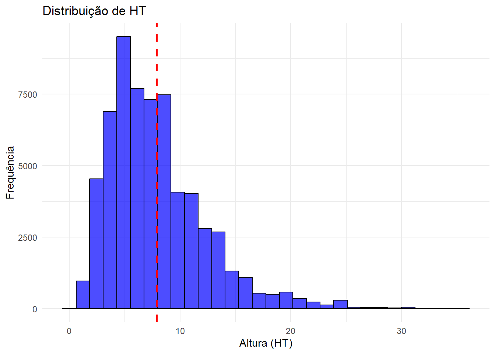
Listar municípios que não foram contemplados pelo IFN
# Biofísico
mun_bio_sem_dados_IFN <- mun_ride %>%
filter(!name_muni %in% tab_bio_ride$name_muni) %>%
select(name_muni, name_state) %>%
st_drop_geometry()
mun_bio_sem_dados_IFN name_muni name_state
1 Arinos Minas Gerais
2 Buritis Minas Gerais
3 Cabeceira Grande Minas Gerais
4 Unaí Minas Gerais
5 Águas Lindas de Goiás Goiás
6 Cabeceiras Goiás
7 Cidade Ocidental Goiás
8 Novo Gama Goiás
9 Valparaíso de Goiás Goiásgeo_mun_bio_sem_dados_IFN <- mun_ride %>%
filter(!name_muni %in% tab_bio_ride$name_muni) %>%
select(name_muni, name_state)
# Sociológico
mun_socio_sem_dados_IFN <- mun_ride %>%
filter(!name_muni %in% tab_socio_ride$name_muni) %>%
select(name_muni, name_state) %>%
st_drop_geometry()
mun_socio_sem_dados_IFN name_muni name_state
1 Arinos Minas Gerais
2 Buritis Minas Gerais
3 Cabeceira Grande Minas Gerais
4 Unaí Minas Gerais
5 Águas Lindas de Goiás Goiás
6 Cidade Ocidental Goiás
7 Novo Gama Goiás
8 Valparaíso de Goiás GoiásRelação espacial entre os municípios da RIDE-DF e os dados do IFN (GO/DF/MG)
tab_bio_taxon_ride <- tab_bio_taxon %>%
st_transform(crs = 4674) %>% # Transformar o sistema de coordenadas
st_join(mun_ride) %>% # Juntar com a tabela de municípios da RIDE-DF e obter o nome do município
filter(!is.na(name_muni))Visualizar dados processados e relacionados
# Criação de um mapa combinando os dois objetos
map_combinado <- ggplot() +
geom_sf(data = mun_ride, fill = "gray90", color = "black") + # Camada de municípios
geom_sf_pattern( # Camada de municípios sem dados
data= geo_mun_bio_sem_dados_IFN, pattern = "stripe", # Tipo de padrão (stripe, crosshatch, etc.)
pattern_angle = 45, # Ângulo das hachuras
pattern_density = 0.01, # Densidade das linhas
pattern_spacing = 0.02, # Espaçamento entre as linhas
pattern_size = 0.1, # Espessura das linhas (bem finas)
fill = "gray90", # Cor de fundo
pattern_color = "black") + # Cor das linhas do padrão
geom_sf(data = tab_bio_taxon_ride, color = "blue", size = 1) + # Camada de pontos espacializados
theme_minimal()
# Visualizar o mapa
map_combinado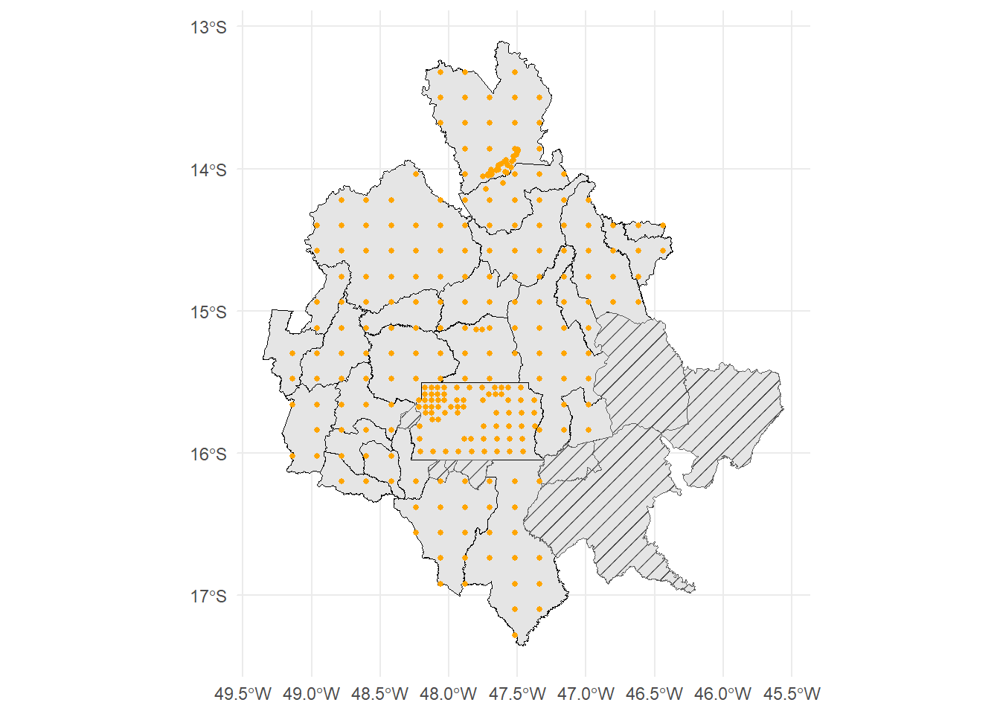
TABELA BIOFÍSICO
Frequencia de espécies na tabela Biofísico.
# Tipos de usos da tabela Sociológica
registros_bio <- tab_bio_taxon_ride %>% # Tabela Sociológica do IFN
filter(!is.na(scientificName)) %>% # Filtrar somente os valores únicos
group_by(scientificName) %>% # Agrupar por município e espécie
summarise(Quantidade = n()) %>%# Listar os tipos de uso
arrange(desc(Quantidade)) %>% # Ordenar de forma decrescente
head(30) # Listar os 30 mais citados
# Total de Registros
sum(registros_bio$Quantidade)[1] 8248# Tabela com os tipos de usos
flex_registros_bio <- registros_bio %>%
st_drop_geometry() %>%
flextable() %>%
set_header_labels(
scientificName = "Nome Científico",
Quantidade = "Quantidade de Registros"
) %>%
bold(part="header") %>%
bold(j = c(1:2),
i = c(1:5)) %>%
width( j = 1, width = 2.5) %>%
width( j = 2, width = 2.5) %>%
add_footer_lines(
"Estão destacados as 30 espécies com mais registros na tabela Biofísica do IFN."
)
flex_registros_bioNome Científico | Quantidade de Registros |
|---|---|
Qualea multiflora Mart. | 607 |
Curatella americana L. | 536 |
Davilla elliptica A.St.-Hil. | 506 |
Qualea parviflora Mart. | 481 |
Tapirira guianensis Aubl. | 436 |
Qualea grandiflora Mart. | 430 |
Arecaceae Bercht. & J.Presl. | 377 |
Astronium fraxinifolium Schott | 288 |
Tachigali rubiginosa (Mart. ex Tul.) Oliveira-Filho | 282 |
Eucalyptus L'Hér. | 278 |
Astronium urundeuva (M.Allemão) Engl. | 264 |
Calophyllum brasiliense Cambess. | 248 |
Protium heptaphyllum (Aubl.) Marchand | 241 |
Miconia ferruginata DC. | 231 |
Copaifera langsdorffii Desf. | 229 |
Byrsonima pachyphylla A.Juss. | 228 |
Byrsonima coccolobifolia Kunth | 214 |
Sclerolobium paniculatum Vogel | 203 |
Bowdichia virgilioides Kunth | 201 |
Kielmeyera coriacea Mart. & Zucc. | 201 |
Callisthene mollissima Warm. | 193 |
Caryocar brasiliense Cambess. | 191 |
Salvertia convallariodora A.St.-Hil. | 180 |
Vellozia squamata Pohl | 177 |
Xylopia aromatica (Lam.) Mart. | 176 |
Magonia pubescens A.St.-Hil. | 174 |
Emmotum nitens (Benth.) Miers | 172 |
Lafoensia pacari A.St.-Hil. | 172 |
Vatairea macrocarpa (Benth.) Ducke | 170 |
Luehea Willd. | 162 |
Estão destacados as 30 espécies com mais registros na tabela Biofísica do IFN. | |
TABELA SOCIOLÓGICA
Tipos de usos presente na tabela Sociológica
# Tipos de usos da tabela Sociológica
tipos_usos <- tab_socio_ride %>% # Tabela Sociológica do IFN
filter(!PARTE_UTI == 'Sem informação') %>% # Filtrar somente os valores únicos
group_by(PARTE_UTI) %>% # Agrupar por município e espécie
summarise(Quantidade = n()) %>%# Listar os tipos de uso
arrange(desc(Quantidade)) # Ordenar de forma decrescente
# Tabela com os tipos de usos
flex_tabela_usos <- tipos_usos %>%
st_drop_geometry() %>%
flextable() %>%
set_header_labels(
PARTE_UTI = "Tipos de Usos",
Quantidade = "Frequência de Repostas"
) %>%
bold(part="header") %>%
# bold(j = c(1:2), # Negrito na coluna 1 e 2
# i = c(1:3)) %>% # Negrito nas linhas 1, 2 e 3
width( j = 1, width = 1.5) %>%
width( j = 2, width = 1.5)
flex_tabela_usosTipos de Usos | Frequência de Repostas |
|---|---|
fruto | 1,656 |
tronco | 666 |
casca | 476 |
galho | 209 |
semente | 146 |
folha | 142 |
raiz | 116 |
flor | 65 |
Quais são os produtos mais citados na tabela Sociológica?
# Produtos mais citados
produtos_mais_citados <- tab_socio_ride %>% # Tabela Sociológica do IFN
filter(!`NOME DESCRITO NO LSA` == 'Sem informação') %>% # Filtrar somente os valores únicos
group_by(`NOME DESCRITO NO LSA`) %>% # Agrupar por município e espécie
summarise(Quantidade = n()) %>%# Listar os tipos de uso
arrange(desc(Quantidade)) %>% # Ordenar de forma decrescente
head(20) # Listar os 20 mais citados
tabela_produtos_mais_citados <- produtos_mais_citados %>%
st_drop_geometry() %>%
flextable() %>%
set_header_labels(
`NOME DESCRITO NO LSA` = "Nome da Espécie - Popular",
Quantidade = "Frequência de Repostas"
) %>%
bold(part="header") %>%
bold(j = c(1:2),
i = c(1:5)) %>%
width( j = 1, width = 1.5) %>%
width( j = 2, width = 1.5) %>%
# bg( bg = "lightblue", i = 1:5) %>% # Cor de fundo
add_footer_lines(
"Estão destacados em negrito os cinco produtos mais citados na tabela Sociológica do IFN. Nessa tabela possui somente os 20 produtos mais citados."
)
tabela_produtos_mais_citadosNome da Espécie - Popular | Frequência de Repostas |
|---|---|
Pequi | 447 |
Sucupira | 245 |
Jatobá | 223 |
Caju | 214 |
Mangaba | 182 |
Baru | 175 |
Aroeira | 136 |
Angico | 126 |
Barbatimão | 122 |
Cagaita | 92 |
Araticum | 80 |
Manga | 80 |
Ipê | 62 |
Tingui | 48 |
Goiaba | 42 |
Quina | 40 |
Pacari | 38 |
Mamica de cadela | 36 |
Murici | 36 |
Imburana | 35 |
Estão destacados em negrito os cinco produtos mais citados na tabela Sociológica do IFN. Nessa tabela possui somente os 20 produtos mais citados. | |
Espacializar os 05 mais citados na tabela Sociológica
1º Pequi
# Produtos mais citados
pequi_frequencia_resposta_socio_ride <- tab_socio_ride %>% # Tabela Sociológica do IFN
filter(!`NOME DESCRITO NO LSA` == 'Sem informação') %>% # Filtrar somente os valores únicos
filter(`NOME DESCRITO NO LSA` == 'Pequi') %>% # Filtrar somente os valores únicos
group_by(`NOME DESCRITO NO LSA`, name_muni) %>% # Agrupar por município e espécie
summarise(frequencia = n(), .groups = 'drop') %>%# Listar os tipos de uso
arrange(desc(frequencia)) %>% # Ordenar de forma decrescente
st_drop_geometry() %>% # Apagar Geometria
rename("nome_popular" = `NOME DESCRITO NO LSA`,
"nome_municipio" = name_muni)
# distribuição espacial
mapa_pequi <- pequi_frequencia_resposta_socio_ride %>%
left_join(mun_ride, by = c("nome_municipio" = "name_muni")) %>%
ggplot() +
geom_sf(aes(fill = frequencia, geometry = geom), lwd = 0.05, color = "#e6e6e6") +
scale_fill_fermenter(
name = "",
breaks = seq(0, 65, 10),
direction = 1,
palette = "YlGnBu"
) +
labs(
title = "Distribuição Espacial do Pequi",
subtitle = "Região Integrada de Desenvolvimento do Distrito Federal e Entorno (RIDE-DF)"
) +
theme_map() +
theme(
# Legend
legend.position = "top",
legend.justification = 0.5,
legend.key.size = unit(.5, "cm"),
legend.key.width = unit(1, "cm"),
legend.text = element_text(size = 10),
legend.margin = margin(),
# Increase size and horizontal alignment of the both the title and subtitle
plot.title = element_text(size = 20, hjust = 0.5),
plot.subtitle = element_text(hjust = 0.5)
)
mapa_pequi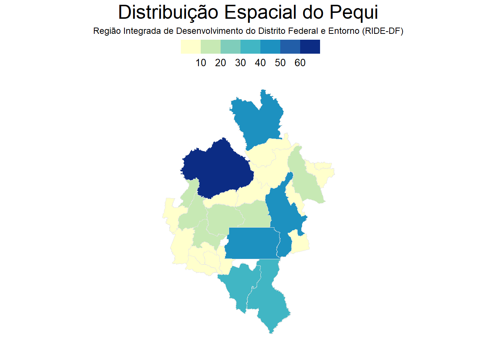
2º Sucupira
# Produtos mais citados
sucupira_frequencia_resposta_socio_ride <- tab_socio_ride %>% # Tabela Sociológica do IFN
filter(!`NOME DESCRITO NO LSA` == 'Sem informação') %>% # Filtrar somente os valores únicos
filter(`NOME DESCRITO NO LSA` == 'Sucupira') %>% # Filtrar somente os valores únicos
group_by(`NOME DESCRITO NO LSA`, name_muni) %>% # Agrupar por município e espécie
summarise(frequencia = n(), .groups = 'drop') %>%# Listar os tipos de uso
arrange(desc(frequencia)) %>% # Ordenar de forma decrescente
st_drop_geometry() %>% # Apagar Geometria
rename("nome_popular" = `NOME DESCRITO NO LSA`,
"nome_municipio" = name_muni)
# distribuição espacial
mapa_sucupira <- sucupira_frequencia_resposta_socio_ride %>%
left_join(mun_ride, by = c("nome_municipio" = "name_muni")) %>%
ggplot() +
geom_sf(aes(fill = frequencia, geometry = geom), lwd = 0.05, color = "#e6e6e6") +
scale_fill_fermenter(
name = "",
breaks = seq(0, 55, 10),
direction = 1,
palette = "YlGnBu"
) +
labs(
title = "Distribuição Espacial da Sucupira",
subtitle = "Região Integrada de Desenvolvimento do Distrito Federal e Entorno (RIDE-DF)"
) +
theme_map() +
theme(
# Legend
legend.position = "top",
legend.justification = 0.5,
legend.key.size = unit(.5, "cm"),
legend.key.width = unit(1, "cm"),
legend.text = element_text(size = 10),
legend.margin = margin(),
# Increase size and horizontal alignment of the both the title and subtitle
plot.title = element_text(size = 20, hjust = 0.5),
plot.subtitle = element_text(hjust = 0.5)
)
mapa_sucupira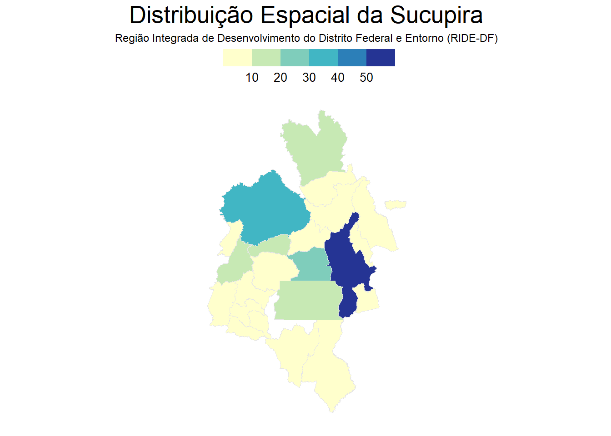
3º Jatobá
# Produtos mais citados
jatoba_frequencia_resposta_socio_ride <- tab_socio_ride %>% # Tabela Sociológica do IFN
filter(!`NOME DESCRITO NO LSA` == 'Sem informação') %>% # Filtrar somente os valores únicos
filter(`NOME DESCRITO NO LSA` == 'Jatobá') %>% # Filtrar somente os valores únicos
group_by(`NOME DESCRITO NO LSA`, name_muni) %>% # Agrupar por município e espécie
summarise(frequencia = n(), .groups = 'drop') %>%# Listar os tipos de uso
arrange(desc(frequencia)) %>% # Ordenar de forma decrescente
st_drop_geometry() %>% # Apagar Geometria
rename("nome_popular" = `NOME DESCRITO NO LSA`,
"nome_municipio" = name_muni)
# distribuição espacial
mapa_jatoba <- jatoba_frequencia_resposta_socio_ride %>%
left_join(mun_ride, by = c("nome_municipio" = "name_muni")) %>%
ggplot() +
geom_sf(aes(fill = frequencia, geometry = geom), lwd = 0.05, color = "#e6e6e6") +
scale_fill_fermenter(
name = "",
breaks = seq(0, 55, 10),
direction = 1,
palette = "YlGnBu"
) +
labs(
title = "Distribuição Espacial do Jatobá",
subtitle = "Região Integrada de Desenvolvimento do Distrito Federal e Entorno (RIDE-DF)"
) +
theme_map() +
theme(
# Legend
legend.position = "top",
legend.justification = 0.5,
legend.key.size = unit(.5, "cm"),
legend.key.width = unit(1, "cm"),
legend.text = element_text(size = 10),
legend.margin = margin(),
# Increase size and horizontal alignment of the both the title and subtitle
plot.title = element_text(size = 20, hjust = 0.5),
plot.subtitle = element_text(hjust = 0.5)
)
mapa_jatoba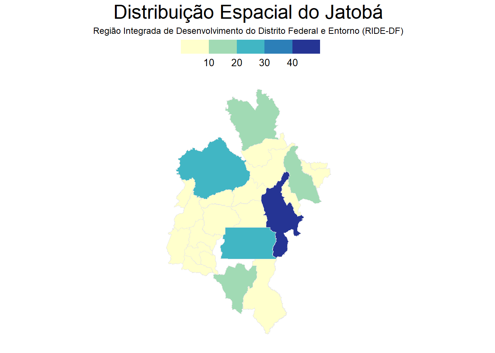
4º Cajú * (Pode ser cajú comum ou cajú do cerrado, não está especificado)
# Produtos mais citados
caju_frequencia_resposta_socio_ride <- tab_socio_ride %>% # Tabela Sociológica do IFN
filter(!`NOME DESCRITO NO LSA` == 'Sem informação') %>% # Filtrar somente os valores únicos
filter(`NOME DESCRITO NO LSA` == 'Caju') %>% # Filtrar somente os valores únicos
group_by(`NOME DESCRITO NO LSA`, name_muni) %>% # Agrupar por município e espécie
summarise(frequencia = n(), .groups = 'drop') %>%# Listar os tipos de uso
arrange(desc(frequencia)) %>% # Ordenar de forma decrescente
st_drop_geometry() %>% # Apagar Geometria
rename("nome_popular" = `NOME DESCRITO NO LSA`,
"nome_municipio" = name_muni)
# distribuição espacial
mapa_caju <- caju_frequencia_resposta_socio_ride %>%
left_join(mun_ride, by = c("nome_municipio" = "name_muni")) %>%
ggplot() +
geom_sf(aes(fill = frequencia, geometry = geom), lwd = 0.05, color = "#e6e6e6") +
scale_fill_fermenter(
name = "",
breaks = seq(0, 30, 5),
direction = 1,
palette = "YlGnBu"
) +
labs(
title = "Distribuição Espacial do Cajú",
subtitle = "Região Integrada de Desenvolvimento do Distrito Federal e Entorno (RIDE-DF)"
) +
theme_map() +
theme(
# Legend
legend.position = "top",
legend.justification = 0.5,
legend.key.size = unit(.5, "cm"),
legend.key.width = unit(1, "cm"),
legend.text = element_text(size = 10),
legend.margin = margin(),
# Increase size and horizontal alignment of the both the title and subtitle
plot.title = element_text(size = 20, hjust = 0.5),
plot.subtitle = element_text(hjust = 0.5)
)
mapa_caju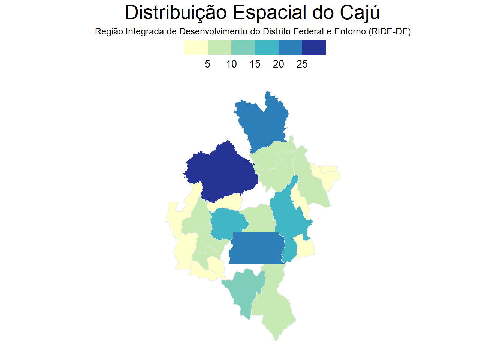
5º Mangaba
# Produtos mais citados
mangaba_frequencia_resposta_socio_ride <- tab_socio_ride %>% # Tabela Sociológica do IFN
filter(!`NOME DESCRITO NO LSA` == 'Sem informação') %>% # Filtrar somente os valores únicos
filter(`NOME DESCRITO NO LSA` == 'Mangaba') %>% # Filtrar somente os valores únicos
group_by(`NOME DESCRITO NO LSA`, name_muni) %>% # Agrupar por município e espécie
summarise(frequencia = n(), .groups = 'drop') %>%# Listar os tipos de uso
arrange(desc(frequencia)) %>% # Ordenar de forma decrescente
st_drop_geometry() %>% # Apagar Geometria
rename("nome_popular" = `NOME DESCRITO NO LSA`,
"nome_municipio" = name_muni)
# distribuição espacial
mapa_mangaba <- mangaba_frequencia_resposta_socio_ride %>%
left_join(mun_ride, by = c("nome_municipio" = "name_muni")) %>%
ggplot() +
geom_sf(aes(fill = frequencia, geometry = geom), lwd = 0.05, color = "#e6e6e6") +
scale_fill_fermenter(
name = "",
breaks = seq(0, 40, 5),
direction = 1,
palette = "YlGnBu"
) +
labs(
title = "Distribuição Espacial da Mangaba",
subtitle = "Região Integrada de Desenvolvimento do Distrito Federal e Entorno (RIDE-DF)"
) +
theme_map() +
theme(
# Legend
legend.position = "top",
legend.justification = 0.5,
legend.key.size = unit(.5, "cm"),
legend.key.width = unit(1, "cm"),
legend.text = element_text(size = 10),
legend.margin = margin(),
# Increase size and horizontal alignment of the both the title and subtitle
plot.title = element_text(size = 20, hjust = 0.5),
plot.subtitle = element_text(hjust = 0.5)
)
mapa_mangaba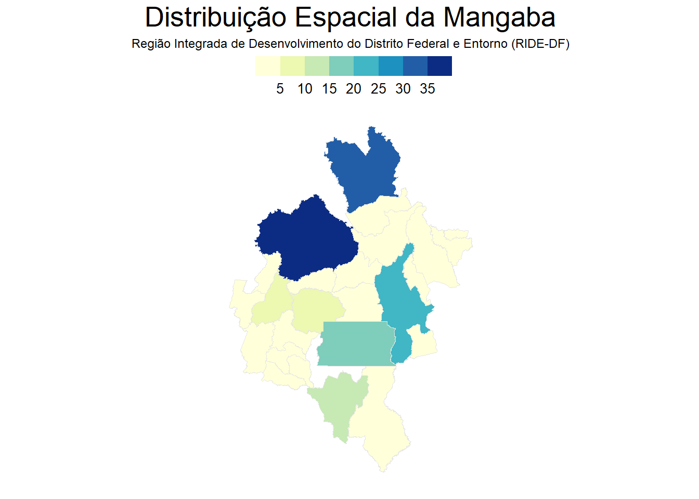
6º Baru (Caso retire o Cajú)
# Produtos mais citados
baru_frequencia_resposta_socio_ride <- tab_socio_ride %>% # Tabela Sociológica do IFN
filter(!`NOME DESCRITO NO LSA` == 'Sem informação') %>% # Filtrar somente os valores únicos
filter(`NOME DESCRITO NO LSA` == 'Baru') %>% # Filtrar somente os valores únicos
group_by(`NOME DESCRITO NO LSA`, name_muni) %>% # Agrupar por município e espécie
summarise(frequencia = n(), .groups = 'drop') %>%# Listar os tipos de uso
arrange(desc(frequencia)) %>% # Ordenar de forma decrescente
st_drop_geometry() %>% # Apagar Geometria
rename("nome_popular" = `NOME DESCRITO NO LSA`,
"nome_municipio" = name_muni)
# distribuição espacial
mapa_baru <- baru_frequencia_resposta_socio_ride %>%
left_join(mun_ride, by = c("nome_municipio" = "name_muni")) %>%
ggplot() +
geom_sf(aes(fill = frequencia, geometry = geom), lwd = 0.05, color = "#e6e6e6") +
scale_fill_fermenter(
name = "",
breaks = seq(0, 45, 5),
direction = 1,
palette = "YlGnBu"
) +
labs(
title = "Distribuição Espacial do Baru",
subtitle = "Região Integrada de Desenvolvimento do Distrito Federal e Entorno (RIDE-DF)"
) +
theme_map() +
theme(
# Legend
legend.position = "top",
legend.justification = 0.5,
legend.key.size = unit(.5, "cm"),
legend.key.width = unit(1, "cm"),
legend.text = element_text(size = 10),
legend.margin = margin(),
# Increase size and horizontal alignment of the both the title and subtitle
plot.title = element_text(size = 20, hjust = 0.5),
plot.subtitle = element_text(hjust = 0.5)
)
mapa_baru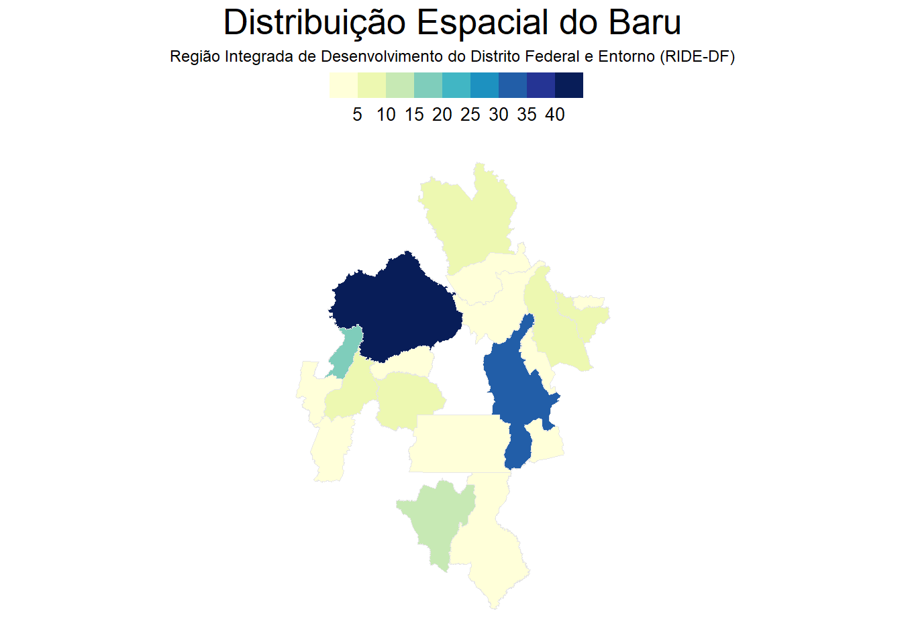
Quais a espécie mais usadas por município?
especie_socio_ride <- tab_socio_ride %>% # Tabela Sociológica do IFN
filter(!`NOME DESCRITO NO LSA` == 'Sem informação') %>% # Filtrar somente os valores válidos
group_by(name_muni, `NOME DESCRITO NO LSA`) %>% # Agrupar por município e espécie
summarise(Quantidade = n(), .groups = 'drop') %>% # Contar a quantidade de espécies
arrange(desc(name_muni), desc(Quantidade)) %>% # Ordenar de forma decrescente pela quantidade
group_by(name_muni) %>% # Reagrupar por município
top_n(1, Quantidade) # Selecionar os 1 maiores valores de cada município
tabela_especie_socio_ride <- especie_socio_ride %>%
st_drop_geometry() %>%
flextable() %>%
set_header_labels(
name_muni = "Município",
`NOME DESCRITO NO LSA` = "Nome da Espécie - Popular",
Quantidade = "Frequência de Respostas"
) %>%
width( j = 1, width = 2) %>%
width( j = 2, width = 1) %>%
width( j = 3, width = 1.5) %>%
theme_vanilla()
tabela_especie_socio_rideMunicípio | Nome da Espécie - Popular | Frequência de Respostas |
|---|---|---|
Água Fria de Goiás | Pequi | 3 |
Vila Propício | Pequi | 19 |
Vila Boa | Pequi | 10 |
São João D'aliança | Caju | 9 |
Simolândia | Pequi | 5 |
Simolândia | Sucupira | 5 |
Santo Antônio do Descoberto | Angico | 2 |
Santo Antônio do Descoberto | Gueroba | 2 |
Santo Antônio do Descoberto | Pequi | 2 |
Planaltina | Sucupira | 22 |
Pirenópolis | Angico | 9 |
Padre Bernardo | Pequi | 17 |
Niquelândia | Pequi | 62 |
Mimoso de Goiás | Sucupira | 12 |
Luziânia | Pequi | 32 |
Goianésia | Pequi | 5 |
Formosa | Sucupira | 54 |
Flores de Goiás | Pequi | 18 |
Cristalina | Pequi | 32 |
Corumbá de Goiás | Pequi | 7 |
Cocalzinho de Goiás | Pequi | 15 |
Cavalcante | Pequi | 41 |
Cabeceiras | Pequi | 7 |
Brasília | Pequi | 49 |
Barro Alto | Baru | 16 |
Alvorada do Norte | Pequi | 10 |
Alto Paraíso de Goiás | Jatobá | 7 |
Alexânia | Pequi | 6 |
Abadiânia | Caju | 4 |
ESPÉCIES SELECIONADAS NA TABELA BIOFÍSICA
Selecionar algumas espécies de produtos florestais não madeireiros (PFNM) do Cerrado
# Importa os dados de um arquivo CSV chamado "Especies de PFNM do Cerrado.csv"
# e os armazena no objeto 'produtos'.
produtos <- import("lista de especies do cerrado.csv")
# Processa os dados para criar uma lista de nomes científicos únicos.
lista_produtos <- produtos %>%
filter(!is.na(Nome_Cientifico)) %>% # Filtra as linhas onde 'Nome_Cientifico' não é NA.
pull(Nome_Cientifico) %>% # Extrai os valores da coluna 'Nome_Cientifico' como um vetor.
strsplit(" ", fixed = TRUE) %>% # Divide cada nome científico no espaço (resultado é uma lista).
sapply(`[[`, 1) # Extrai a primeira palavra (gênero) de cada nome científico.
# Exibe o vetor 'lista_produtos'.
lista_produtos [1] "Anadenanthera" "Annona" "Attalea" "Platonia"
[5] "Stryphnodendron" "Dipteryx" "Vanila" "Mauritia"
[9] "Eugenia" "Anacardium" "Copaifera" "Dimorphandra"
[13] "Syagrus" "Inga" "Syzygium" "Hymenaea"
[17] "Genipa" "Euterpe" "Acrocomia" "Hancornia"
[21] "Passiflora" "Cordiera" "Alibertia" "Byrsonima"
[25] "Caryocar" "Bowdichia" "Pterodon" # Cria uma expressão regular com os gêneros separados por "|",
# permitindo buscar qualquer um desses gêneros no próximo passo.
padrao <- paste(lista_produtos, collapse = "|")
# Filtra as linhas do data frame 'tab_bio_taxon_ride'
# que contêm algum dos gêneros em 'padrao' na coluna 'scientificName'.
produtos_bio_ride <- tab_bio_taxon_ride %>%
filter(str_detect(scientificName, padrao))
# st_write(produtos_bio_ride, "produtos_bio_ride.gpkg", delete_dsn = TRUE, driver = "GPKG")Quais as espécies (produtos) mais usados ?
# Nomes Populares
df_produtos_nome_populares <- produtos %>%
mutate(
genero = strsplit(Nome_Cientifico, " ", fixed = TRUE) %>% sapply(`[[`, 1)
)
# Produtos mais citados
produtos_bio_mais_citados <- produtos_bio_ride %>% # Tabela Sociológica do IFN
group_by(scientificName) %>% # Agrupar por município e espécie
summarise(Quantidade = n()) %>%# Listar os tipos de uso
arrange(desc(Quantidade)) %>% # Ordenar de forma decrescente
mutate(
Nome_Popular = associar_nome_popular(scientificName, df_produtos_nome_populares)
) %>%
head(20) # Listar os 20 mais citados
# Tabela
tabela_produtos_bio_mais_citados <- produtos_bio_mais_citados %>%
st_drop_geometry() %>%
select(scientificName, Nome_Popular, Quantidade) %>%
flextable() %>%
set_header_labels(
scientificName = "Nome Científico",
Nome_Popular = "Nome Popular",
Quantidade = "Frequência de Repostas"
) %>%
bold(part="header") %>%
# bold(j = c(1:2),
# i = c(1:5)) %>%
width( j = 1, width = 1.5) %>%
width( j = 2, width = 1.5) %>%
# bg( bg = "lightblue", i = 1:5) %>%
add_footer_lines(
"Foi realizada uma seleção inicial de 29 espécies, e com base nessa seleção, as 20 espécies mais citadas (tab. Biofísica IFN) estão apresentadas nessa tabela."
)
tabela_produtos_bio_mais_citadosNome Científico | Nome Popular | Frequência de Repostas |
|---|---|---|
Copaifera langsdorffii Desf. | Copaíba | 229 |
Byrsonima pachyphylla A.Juss. | Murici | 228 |
Byrsonima coccolobifolia Kunth | Murici | 214 |
Bowdichia virgilioides Kunth | Sucupira | 201 |
Caryocar brasiliense Cambess. | Pequi | 191 |
Byrsonima clausseniana A.Juss. | Murici | 154 |
Hymenaea stigonocarpa Mart. ex Hayne | Jatobá | 129 |
Syagrus flexuosa (Mart.) Becc. | Guariroba | 110 |
Anadenanthera Speg. | Angico | 97 |
Syagrus Mart. | Guariroba | 87 |
Pterodon emarginatus Vogel | Sucupira-branca | 81 |
Stryphnodendron adstringens (Mart.) Coville | Barbatimão | 76 |
Dimorphandra mollis Benth. | Fava d'anta/Faveiro | 74 |
Cordiera myrciifolia (K.Schum.) C.H.Perss. & Delprete | Marmelada/marmelada-de-cachorro | 65 |
Anacardium occidentale L. | Cajuzinho-do-cerrado | 61 |
Inga Mill. | Ingá | 58 |
Eugenia dysenterica (Mart.) DC. | Cagaita | 48 |
Hancornia speciosa Gomes | Mangaba | 47 |
Byrsonima guilleminiana A.Juss. | Murici | 44 |
Hymenaea L. | Jatobá | 44 |
Foi realizada uma seleção inicial de 29 espécies, e com base nessa seleção, as 20 espécies mais citadas (tab. Biofísica IFN) estão apresentadas nessa tabela. | ||
Espacializar os 05 mais citados
1º Copaíba
# Produtos mais citados
copaiba_freq_respostas_bio_ride <- produtos_bio_ride %>% # Tabela Sociológica do IFN
mutate(
nome_popular = associar_nome_popular(scientificName, df_produtos_nome_populares)
) %>%
filter(nome_popular == 'Copaíba') %>% # Filtrar somente os valores únicos
group_by(nome_popular, name_muni) %>% # Agrupar por município e espécie
summarise(freq = n(), .groups = 'drop') %>%# Listar os tipos de uso
arrange(desc(freq)) %>% # Ordenar de forma decrescente
rename("nome_municipio" = name_muni) %>%
st_drop_geometry()
# print(
# copaiba_freq_respostas_bio_ride %>% select(freq) %>% pull() %>% max()
# ) # 89
# distribuição espacial
mapa_copaiba <- copaiba_freq_respostas_bio_ride %>%
left_join(mun_ride, by = c("nome_municipio" = "name_muni")) %>%
ggplot() +
geom_sf(aes(fill = freq, geometry = geom), lwd = 0.05, color = "#e6e6e6") +
scale_fill_fermenter(
name = "",
breaks = seq(0, 100, 20),
direction = 1,
palette = "YlGnBu"
) +
labs(
title = "Distribuição Espacial do Copaiba",
subtitle = "Região Integrada de Desenvolvimento do Distrito Federal e Entorno (RIDE-DF)"
) +
theme_map() +
theme(
# Legend
legend.position = "top",
legend.justification = 0.5,
legend.key.size = unit(.5, "cm"),
legend.key.width = unit(1, "cm"),
legend.text = element_text(size = 10),
legend.margin = margin(),
# Increase size and horizontal alignment of the both the title and subtitle
plot.title = element_text(size = 20, hjust = 0.5),
plot.subtitle = element_text(hjust = 0.5)
)
mapa_copaiba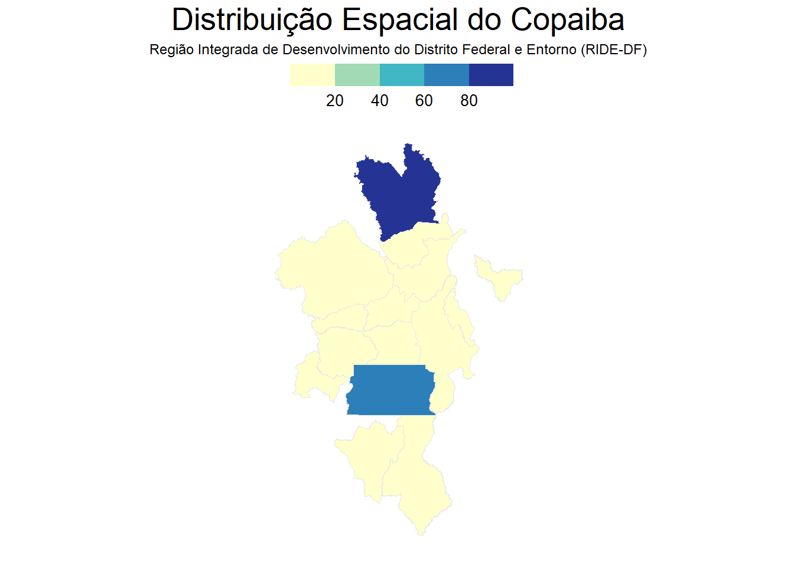
2º Murici
# Produtos mais citados
murici_freq_respostas_bio_ride <- produtos_bio_ride %>% # Tabela Sociológica do IFN
mutate(
nome_popular = associar_nome_popular(scientificName, df_produtos_nome_populares)
) %>%
filter(nome_popular == 'Murici') %>% # Filtrar somente os valores únicos
group_by(nome_popular, name_muni) %>% # Agrupar por município e espécie
summarise(freq = n(), .groups = 'drop') %>%# Listar os tipos de uso
arrange(desc(freq)) %>% # Ordenar de forma decrescente
rename("nome_municipio" = name_muni) %>%
st_drop_geometry()
# print(
# murici_freq_respostas_bio_ride %>% select(freq) %>% pull() %>% max()
# ) # 34
# distribuição espacial
mapa_murici <- murici_freq_respostas_bio_ride %>%
left_join(mun_ride, by = c("nome_municipio" = "name_muni")) %>%
ggplot() +
geom_sf(aes(fill = freq, geometry = geom), lwd = 0.05, color = "#e6e6e6") +
scale_fill_fermenter(
name = "",
breaks = seq(0, 160, 20),
direction = 1,
palette = "YlGnBu"
) +
labs(
title = "Distribuição Espacial do Copaiba",
subtitle = "Região Integrada de Desenvolvimento do Distrito Federal e Entorno (RIDE-DF)"
) +
theme_map() +
theme(
# Legend
legend.position = "top",
legend.justification = 0.5,
legend.key.size = unit(.5, "cm"),
legend.key.width = unit(1, "cm"),
legend.text = element_text(size = 10),
legend.margin = margin(),
# Increase size and horizontal alignment of the both the title and subtitle
plot.title = element_text(size = 20, hjust = 0.5),
plot.subtitle = element_text(hjust = 0.5)
)
mapa_copaiba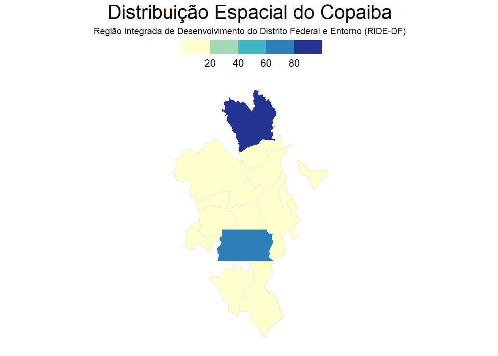
3º Sucupira
# Produtos mais citados
sucupira_freq_respostas_bio_ride <- produtos_bio_ride %>% # Tabela Sociológica do IFN
mutate(
nome_popular = associar_nome_popular(scientificName, df_produtos_nome_populares)
) %>%
filter(nome_popular == 'Sucupira') %>% # Filtrar somente os valores únicos
group_by(nome_popular, name_muni) %>% # Agrupar por município e espécie
summarise(freq = n(), .groups = 'drop') %>%# Listar os tipos de uso
arrange(desc(freq)) %>% # Ordenar de forma decrescente
rename("nome_municipio" = name_muni) %>%
st_drop_geometry()
# print(
# sucupira_freq_respostas_bio_ride %>% select(freq) %>% pull() %>% max()
# ) # 34
# distribuição espacial
mapa_sucupira <- sucupira_freq_respostas_bio_ride %>%
left_join(mun_ride, by = c("nome_municipio" = "name_muni")) %>%
ggplot() +
geom_sf(aes(fill = freq, geometry = geom), lwd = 0.05, color = "#e6e6e6") +
scale_fill_fermenter(
name = "",
breaks = seq(0, 35, 5),
direction = 1,
palette = "YlGnBu"
) +
labs(
title = "Distribuição Espacial do Sucupira",
subtitle = "Região Integrada de Desenvolvimento do Distrito Federal e Entorno (RIDE-DF)"
) +
theme_map() +
theme(
# Legend
legend.position = "top",
legend.justification = 0.5,
legend.key.size = unit(.5, "cm"),
legend.key.width = unit(1, "cm"),
legend.text = element_text(size = 10),
legend.margin = margin(),
# Increase size and horizontal alignment of the both the title and subtitle
plot.title = element_text(size = 20, hjust = 0.5),
plot.subtitle = element_text(hjust = 0.5)
)
mapa_sucupira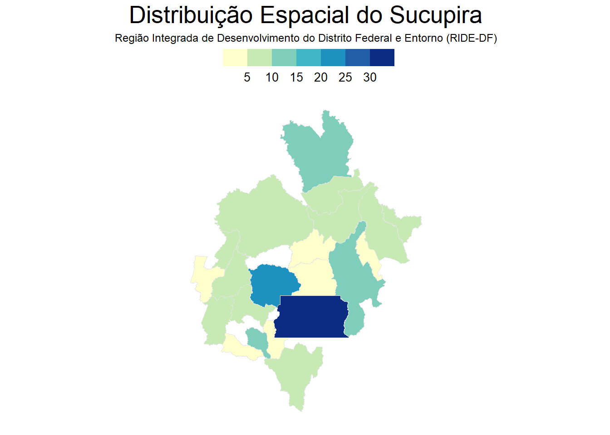
4º Pequi
# Produtos mais citados
pequi_freq_respostas_bio_ride <- produtos_bio_ride %>% # Tabela Sociológica do IFN
mutate(
nome_popular = associar_nome_popular(scientificName, df_produtos_nome_populares)
) %>%
filter(nome_popular == 'Pequi') %>% # Filtrar somente os valores únicos
group_by(nome_popular, name_muni) %>% # Agrupar por município e espécie
summarise(freq = n(), .groups = 'drop') %>%# Listar os tipos de uso
arrange(desc(freq)) %>% # Ordenar de forma decrescente
rename("nome_municipio" = name_muni) %>%
st_drop_geometry()
# print(
# pequi_freq_respostas_bio_ride %>% select(freq) %>% pull() %>% max()
# ) # 66
# distribuição espacial
mapa_pequi <- pequi_freq_respostas_bio_ride %>%
left_join(mun_ride, by = c("nome_municipio" = "name_muni")) %>%
ggplot() +
geom_sf(aes(fill = freq, geometry = geom), lwd = 0.05, color = "#e6e6e6") +
scale_fill_fermenter(
name = "",
breaks = seq(0, 70, 10),
direction = 1,
palette = "YlGnBu"
) +
labs(
title = "Distribuição Espacial do Pequi",
subtitle = "Região Integrada de Desenvolvimento do Distrito Federal e Entorno (RIDE-DF)"
) +
theme_map() +
theme(
# Legend
legend.position = "top",
legend.justification = 0.5,
legend.key.size = unit(.5, "cm"),
legend.key.width = unit(1, "cm"),
legend.text = element_text(size = 10),
legend.margin = margin(),
# Increase size and horizontal alignment of the both the title and subtitle
plot.title = element_text(size = 20, hjust = 0.5),
plot.subtitle = element_text(hjust = 0.5)
)
mapa_pequi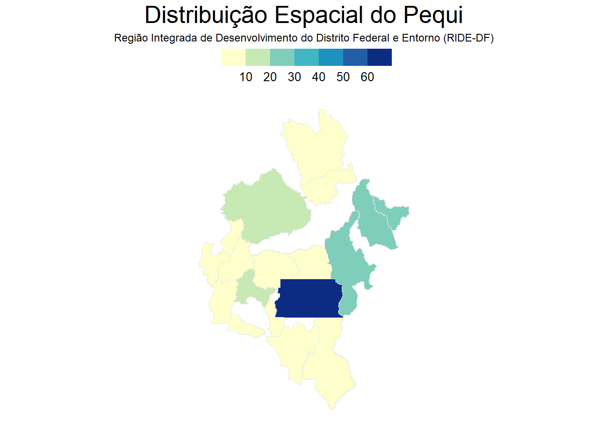
5º Jatobá
# Produtos mais citados
jatoba_freq_respostas_bio_ride <- produtos_bio_ride %>% # Tabela Sociológica do IFN
mutate(
nome_popular = associar_nome_popular(scientificName, df_produtos_nome_populares)
) %>%
filter(nome_popular == 'Jatobá') %>% # Filtrar somente os valores únicos
group_by(nome_popular, name_muni) %>% # Agrupar por município e espécie
summarise(freq = n(), .groups = 'drop') %>%# Listar os tipos de uso
arrange(desc(freq)) %>% # Ordenar de forma decrescente
rename("nome_municipio" = name_muni) %>%
st_drop_geometry()
# print(
# jatoba_freq_respostas_bio_ride %>% select(freq) %>% pull() %>% max()
# ) # 44
# distribuição espacial
mapa_jatoba <- jatoba_freq_respostas_bio_ride %>%
left_join(mun_ride, by = c("nome_municipio" = "name_muni")) %>%
ggplot() +
geom_sf(aes(fill = freq, geometry = geom), lwd = 0.05, color = "#e6e6e6") +
scale_fill_fermenter(
name = "",
breaks = seq(0, 45, 5),
direction = 1,
palette = "YlGnBu"
) +
labs(
title = "Distribuição Espacial do Jatobá",
subtitle = "Região Integrada de Desenvolvimento do Distrito Federal e Entorno (RIDE-DF)"
) +
theme_map() +
theme(
# Legend
legend.position = "top",
legend.justification = 0.5,
legend.key.size = unit(.5, "cm"),
legend.key.width = unit(1, "cm"),
legend.text = element_text(size = 10),
legend.margin = margin(),
# Increase size and horizontal alignment of the both the title and subtitle
plot.title = element_text(size = 20, hjust = 0.5),
plot.subtitle = element_text(hjust = 0.5)
)
mapa_jatoba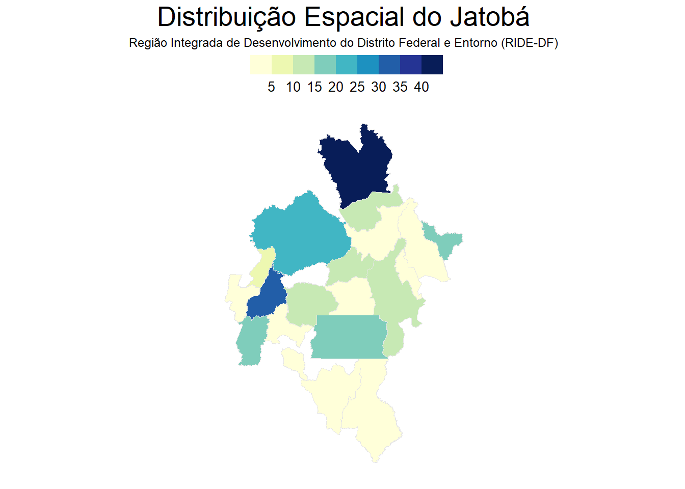
6º Guariroba
# Produtos mais citados
guariroba_freq_respostas_bio_ride <- produtos_bio_ride %>% # Tabela Sociológica do IFN
mutate(
nome_popular = associar_nome_popular(scientificName, df_produtos_nome_populares)
) %>%
filter(nome_popular == 'Guariroba') %>% # Filtrar somente os valores únicos
group_by(nome_popular, name_muni) %>% # Agrupar por município e espécie
summarise(freq = n(), .groups = 'drop') %>%# Listar os tipos de uso
arrange(desc(freq)) %>% # Ordenar de forma decrescente
rename("nome_municipio" = name_muni) %>%
st_drop_geometry()
# print(
# guariroba_freq_respostas_bio_ride %>% select(freq) %>% pull() %>% max()
# ) # 130
# distribuição espacial
mapa_guariroba <- guariroba_freq_respostas_bio_ride %>%
left_join(mun_ride, by = c("nome_municipio" = "name_muni")) %>%
ggplot() +
geom_sf(aes(fill = freq, geometry = geom), lwd = 0.05, color = "#e6e6e6") +
scale_fill_fermenter(
name = "",
breaks = seq(0, 130, 15),
direction = 1,
palette = "YlGnBu"
) +
labs(
title = "Distribuição Espacial do Jatobá",
subtitle = "Região Integrada de Desenvolvimento do Distrito Federal e Entorno (RIDE-DF)"
) +
theme_map() +
theme(
# Legend
legend.position = "top",
legend.justification = 0.5,
legend.key.size = unit(.5, "cm"),
legend.key.width = unit(1.5, "cm"),
legend.text = element_text(size = 10),
legend.margin = margin(),
# Increase size and horizontal alignment of the both the title and subtitle
plot.title = element_text(size = 20, hjust = 0.5),
plot.subtitle = element_text(hjust = 0.5)
)
mapa_guariroba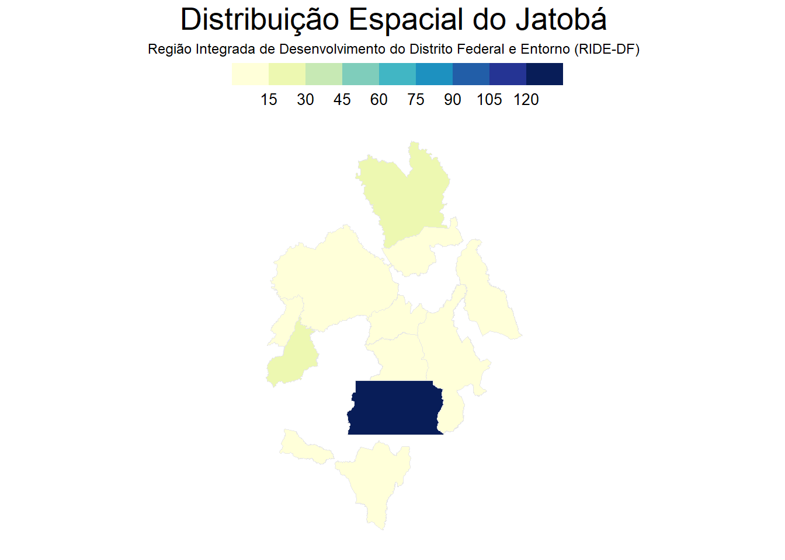
Quais as espécies (produtos) mais usadas por município?
# Produtos mais citados
produtos_bio_mais_citados_ride <- produtos_bio_ride %>% # Tabela Sociológica do IFN
group_by(name_muni, scientificName) %>% # Agrupar por município e espécie
summarise(Quantidade = n(), .groups = 'drop') %>% # Contar a quantidade de espécies
arrange(desc(name_muni), desc(Quantidade)) %>% # Ordenar de forma decrescente pela quantidade
group_by(name_muni) %>% # Reagrupar por município
mutate(
Nome_Popular = associar_nome_popular(scientificName, df_produtos_nome_populares)
) %>%
select(name_muni, scientificName, Nome_Popular, Quantidade) %>%
slice_max(Quantidade, with_ties = FALSE) # Selecionar a maior quantidade de cada município
# Tabela
tabela_produtos_bio_mais_citados_ride <- produtos_bio_mais_citados_ride %>%
st_drop_geometry() %>%
flextable() %>%
set_header_labels(
name_muni = "Município",
scientificName = "Nome do Científico",
Nome_Popular = "Nome Popular",
Quantidade = "Frequencia do Produto"
) %>%
bold(part="header") %>%
# bold(j = c(1:2),
# i = c(1:5)) %>%
width( j = 1, width = 2) %>%
width( j = 2, width = 2) %>%
width( j = 3, width = 1.5) %>%
width( j = 4, width = 1.5) %>%
# bg( bg = "lightblue", i = 1:5) %>%
add_footer_lines(
"Foi realizada uma seleção prévia de 29 espécies, e com base nessa seleção, as mais citadas (tab. Biofísica) por município estão contidas nessa tabela."
)
tabela_produtos_bio_mais_citados_rideMunicípio | Nome do Científico | Nome Popular | Frequencia do Produto |
|---|---|---|---|
Abadiânia | Byrsonima pachyphylla A.Juss. | Murici | 6 |
Alexânia | Bowdichia virgilioides Kunth | Sucupira | 12 |
Alto Paraíso de Goiás | Byrsonima coccolobifolia Kunth | Murici | 15 |
Alvorada do Norte | Byrsonima pachyphylla A.Juss. | Murici | 63 |
Barro Alto | Byrsonima clausseniana A.Juss. | Murici | 25 |
Brasília | Syagrus flexuosa (Mart.) Becc. | Guariroba | 99 |
Cavalcante | Copaifera langsdorffii Desf. | Copaíba | 87 |
Cocalzinho de Goiás | Byrsonima clausseniana A.Juss. | Murici | 25 |
Corumbá de Goiás | Anadenanthera Speg. | Angico | 4 |
Cristalina | Eugenia florida DC. | Cagaita | 27 |
Flores de Goiás | Byrsonima clausseniana A.Juss. | Murici | 26 |
Formosa | Caryocar brasiliense Cambess. | Pequi | 27 |
Goianésia | Bowdichia virgilioides Kunth | Sucupira | 2 |
Luziânia | Byrsonima pachyphylla A.Juss. | Murici | 31 |
Mimoso de Goiás | Copaifera langsdorffii Desf. | Copaíba | 16 |
Niquelândia | Hymenaea stigonocarpa Mart. ex Hayne | Jatobá | 19 |
Padre Bernardo | Bowdichia virgilioides Kunth | Sucupira | 25 |
Pirenópolis | Hymenaea stigonocarpa Mart. ex Hayne | Jatobá | 18 |
Planaltina | Anadenanthera Speg. | Angico | 32 |
Santo Antônio do Descoberto | Byrsonima pachyphylla A.Juss. | Murici | 8 |
São João D'aliança | Bowdichia virgilioides Kunth | Sucupira | 10 |
Vila Boa | Dipteryx alata Vogel | Baru | 5 |
Vila Propício | Byrsonima coccolobifolia Kunth | Murici | 30 |
Água Fria de Goiás | Pterodon emarginatus Vogel | Sucupira-branca | 20 |
Foi realizada uma seleção prévia de 29 espécies, e com base nessa seleção, as mais citadas (tab. Biofísica) por município estão contidas nessa tabela. | |||